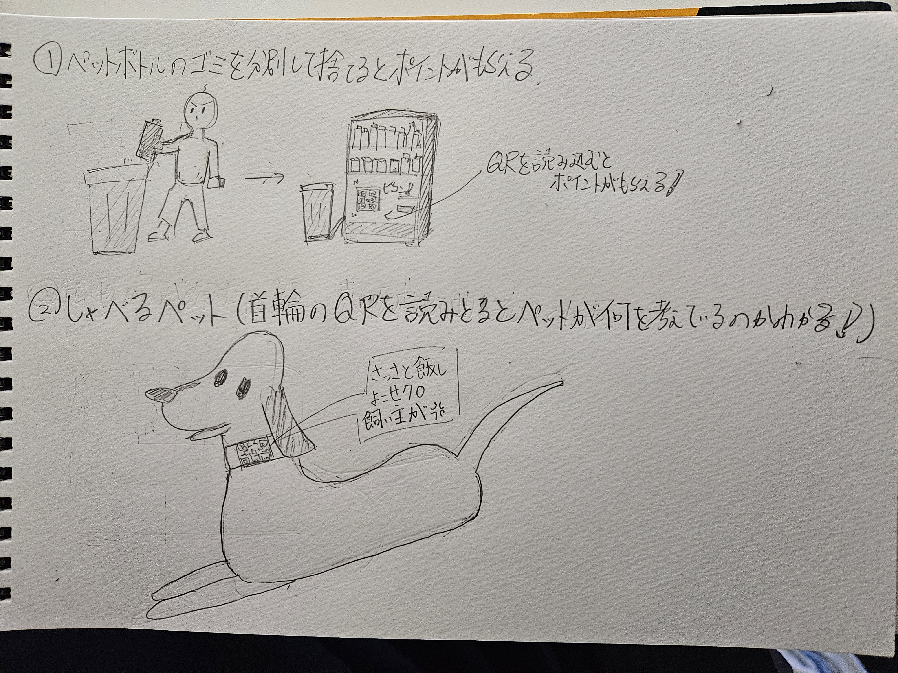

1.IoTとは何か
→IoT（Internet of Things）とは、センサーやアクチュエーターと通信機能を備えたモノがインターネット経由で通信すること。
これにより遠隔操作や状態監視、データ収集が可能になる。
身近な例は、アレクサなどの声に反応して遠隔操作できるもの。スマートウォッチで歩数や心拍数を計測するというようなものがある。
IoTという言葉が発症したのは1999年と、意外と早く一般的に普及するようになったのは、さらに10年後の2010年後半からだ。
2.実験した動画
→QRを読み込むとLEDのON・OFFが可能になる。 遠距離でも動作する！
3.IoTで何ができそうか？ポストイットの画像

無人タクシーのシステムは中国ですでにできているらしい！！
4.自分で考えたアイディアスケッチ

説明
一つ目がペットボトルを分別して捨てる（ラベルやキャップを外して捨てる）とポイントがもらえるQRが現れるというもの
自販機とゴミ箱をネットでリンクできるようなチップを互いにつけゴミが捨てられたことを感知したら、専用のポイント貯めアプリでバーコードを読み取れるようになる。
二つ目は、ペットの首輪についているQRを読み取ることでペットが何を考えているのか教えてくれるシステム。
ペットの鳴き声や仕草を分析するような細かく計測するシステムをスマートウォッチみたく首輪に搭載して、QRを読み取ることで
その時何を考えているのか教えてくれるというもの。
5.参考文献
モノのインターネットの意味
IoTとは？Iotの歴史やいつから普及しているのかを...